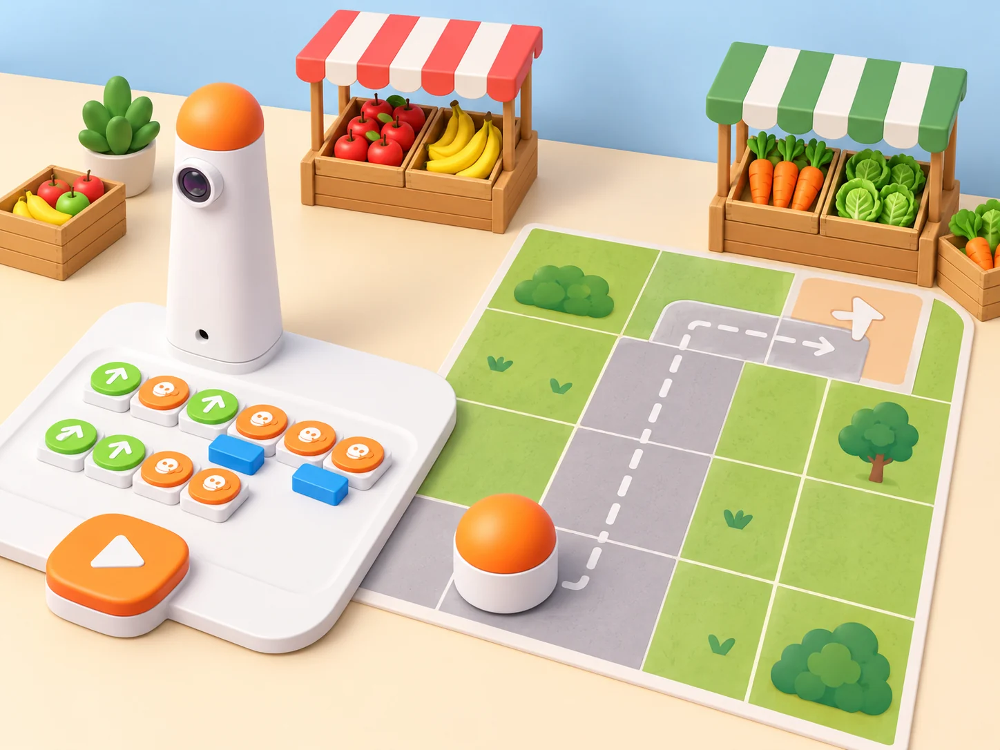

Ruta Saludable pel Mercat del Barri
🏷️ Salut, hàbits i benestar
🌱 Situació, repte i intenció
🎯 Aprenentatges i vocabulari
- Llegir una graella i descompondre encàrrecs en parades, ordres i destinacions.
- Planificar una compra fictícia respectant un pressupost i les quantitats acordades.
- Comparar recorreguts amb una mateixa unitat i comprovar que cap encàrrec s’ha omés.
- Inventar i compartir una missió de mercat amb aliments locals i opcions no estigmatitzants.
🧰 Materials i preparació
Prepareu MatataBot, torre de comandaments i tauler del Coding Set; una quadrícula pròpia de 5 × 5 caselles; quatre parades amb noms i pictogrames (fruita de temporada, hortalisses, cooperativa i cuina escolar); quatre targetes de producte que càpiguen planes sobre un suport de paper lleuger; targetes de comanda, fletxes, llapis, moneda simbòlica i full de registre. Situeu parades i obstacles amb espai perquè el robot puga avançar, retrocedir i girar sense enganxar-se.
Comproveu primer que el suport no tapa sensors, rodes ni elements de programació. Si no es pot carregar amb estabilitat, una persona transporta les targetes mentre MatataBot guia la ruta, i l’equip anota aquesta variant.
Useu valors inventats per a l’exercici: quatre productes amb preus enters entre 1 i 5 monedes i un pressupost de 12. Es pot canviar el pressupost o treballar amb preus sense moneda per adaptar el càlcul; no són preus reals del mercat ni recomanacions de compra.
📅 Seqüència didàctica
Llegir la graella i arribar a una parada
Fase 1 · Activem i prediem
Presenteu quatre encàrrecs ficticis i pregunteu què ha d’incloure una instrucció perquè una altra parella la puga seguir.
Fase 2 · Explorem i construïm
Marqueu l’inici, una parada i dos obstacles; poseu una fletxa davant del robot i descriviu cap a on mira. Modeleu ordres de pas endavant, pas arrere i gir a esquerra/dreta de 90°.
Fase 3 · Expliquem i registrem
Verbalitzeu que un gir canvia l’orientació però no trasllada el robot a una altra casella. Les parelles dibuixen una ruta i construeixen la seqüència amb targetes de comanda abans de posar-la al tauler.
Fase 4 · Apliquem i millorem
Executeu la seqüència, compareu la posició prevista amb la real i corregiu l’ordre en el primer punt de desviació.
Fase 5 · Comprovem i reflexionem
Quatre encàrrecs, quatre històries
Fase 1 · Activem i prediem
Col·loqueu les quatre parades i associeu a cadascuna un producte i una targeta-personatge pròpia, com qui cuina el dinar col·lectiu o prepara un tast de temporada. Decidiu en quin ordre visitareu les parades.
Fase 2 · Explorem i construïm
Decidiu on es descarregarà cada targeta i prepareu la seqüència de moviments. Podeu carregar les quatre targetes planes o repartir-les a una persona missatgera.
Fase 3 · Expliquem i registrem
Cada persona verbalitza una part de l’itinerari. Proveu el recorregut i, en cada parada, retireu una única targeta, llegiu la microhistòria corresponent i marqueu el lliurament.
Fase 4 · Apliquem i millorem
Si una ordre porta a una parada incorrecta, atureu el robot, reconstruïu l’orientació actual i repreneu des d’allí. Ordeneu les destinacions de nou amb les pistes de cada microhistòria.
Fase 5 · Comprovem i reflexionem
Comparar cost i recorregut sense perdre cap encàrrec
Fase 1 · Activem i prediem
Llegiu la carta fictícia, sumeu els quatre productes i decidiu si el total respecta 12 monedes; representeu la suma amb monedes o una recta numèrica. Si supera el límit, compareu alternatives que encara complisquen el repte, sense parlar de la capacitat adquisitiva real de les famílies.
Fase 2 · Explorem i construïm
Dibuixeu dos ordres de visita possibles i calculeu passos i girs a partir de la graella. Anoteu una predicció de cost i una altra de recorregut.
Fase 3 · Expliquem i registrem
Executeu les dues rutes en les mateixes condicions i anoteu desplaçaments, errors d’orientació, encàrrecs lliurats i cost.
Fase 4 · Apliquem i millorem
Expliqueu quina ruta és més curta segons el recompte i si això canvia la decisió de cost. Distingiu longitud del recorregut, preu i quantitat de productes: són mesures diferents.
Fase 5 · Comprovem i reflexionem
Canviar l’inici, crear i compartir una missió
Fase 1 · Activem i prediem
Canvieu l’orientació inicial o moveu una parada. Cada parella anticipa quines ordres deixaran de servir i per què.
Fase 2 · Explorem i construïm
Modifiqueu el programa. Si el recorregut repeteix un tram, representeu-lo amb una targeta de repetició quan el set i el nivell del grup ho permeten.
Fase 3 · Expliquem i registrem
Compareu la notació de repetició amb l’expansió ordre per ordre i anoteu quins moviments comprimeix.
Fase 4 · Apliquem i millorem
Inventeu una cinquena destinació o una targeta d’encàrrec pròpia i reviseu que siga assolible sense col·lisions. Una altra parella executa les instruccions i deixa una pregunta o proposta de millora; decidiu si la incorporeu i justifiqueu la decisió.
Fase 5 · Comprovem i reflexionem
🧪 Evidències i avaluació
Recolliu el mapa anotat, les seqüències en targetes, les prediccions de ruta, la suma del pressupost fictici, la taula de proves i les microhistòries. Observeu si l’alumnat (1) relaciona orientació, girs i desplaçaments; (2) programa i depura una ruta a partir del punt concret on divergeix; (3) recorda i lliura els quatre encàrrecs en l’ordre acordat; i (4) representa cost i distància amb unitats diferenciades i explica les limitacions de la prova. Es pot valorar amb tres nivells: ho resol amb modelatge;
ho resol amb alguna pista; ho resol i ho explica de manera autònoma. No es puntua la velocitat ni que la ruta siga la més curta si la prova no compara totes les alternatives.
♿ Participació, accessibilitat i seguretat
Oferiu mapa gran, alt contrast, fletxes tàctils, pictogrames de parades, peces mòbils i lectura en veu alta. Es pot participar com a planificador/a, programador/a de peces, responsable de parades, narrador/a, observador/a d’orientació o registrador/a; feu rotar les responsabilitats sense exigir manipulació fina ni exposició oral individual. Reduïu el mapa a tres parades o retireu obstacles si cal, i amplieu-lo amb una ruta alternativa o una repetició si el grup està preparat. Permeteu calcular amb objectes, dibuix, recta numèrica o nombres.
Les històries són fictícies i no demanen revelar hàbits, salut o situació econòmica personal.
🌱 Connexió local i ús responsable
Les parades poden representar un mercat de la comarca i les targetes poden parlar de productes de temporada consultats en una font local que el centre date i cite. Si no s’ha fet aquesta verificació, etiqueteu la selecció com a exemple fictici i no afirmeu que un producte és de temporada. El pressupost és una variable matemàtica de joc, no una prova de com compra una família; es pot substituir per “nombre màxim d’encàrrecs” per evitar parlar de diners.
🔗 Referents i adaptació
La fitxa oficial Delivery Animals proposa una sessió de 45 minuts: revisar moviments, preparar quatre llocs i quatre animals, situar obstacles i transportar cada figura fins a la destinació, amb un relat per visita; amplia després a quatre destinacions en un mateix recorregut i a celebrar lliuraments amb música. Aquesta proposta conserva quatre càrregues, quatre destinacions, obstacles, ordre de visita, canvi d’orientació i narració;
transforma els animals i llocs en encàrrecs i parades d’un mercat local, i hi afegeix una investigació de preus ficticis i comparació de rutes. Els mapes, targetes, històries i imatge són propis; la possible repetició de codi és una extensió i depén dels blocs reals del set.